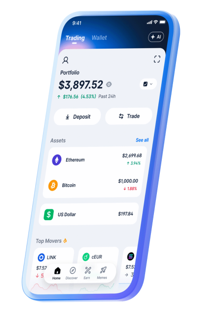
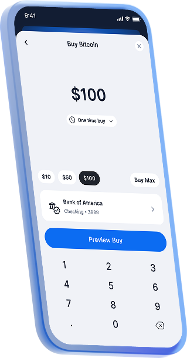
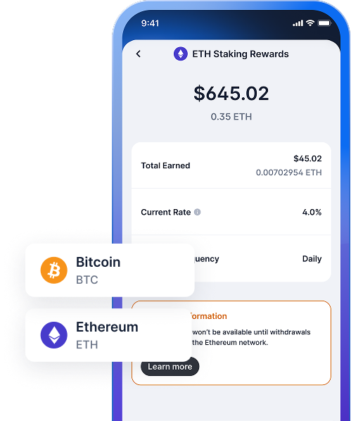
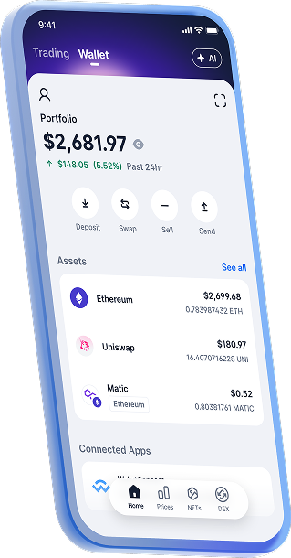
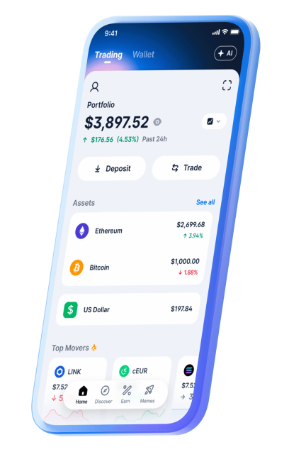
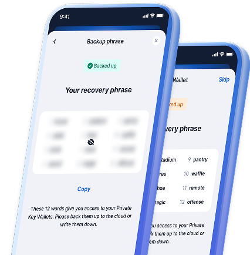

Buy, sell, and swap crypto in minutes
Verify your identity and add a payment method to start buying crypto.
Get StartedEarn up to ...% on your crypto
Get rewards by putting your Bitcoin, Ethereum, and other crypto assets to work.
Learn more

Your keys, your crypto
Self-custody your crypto across Bitcoin, Ethereum, Polygon, and other leading blockchains.
Get StartedTrade the hottest memecoins with ease and security
The #1 place to trade memecoins.
Listed Coins
+
Discover the world of DeFi
Connect to dapps, manage your NFT collection, and unlock the power of web3.

Get peace of mind with best-in-class security
When it comes to ensuring your crypto is secure, we think about every last detail so you don’t have to.
Learn more